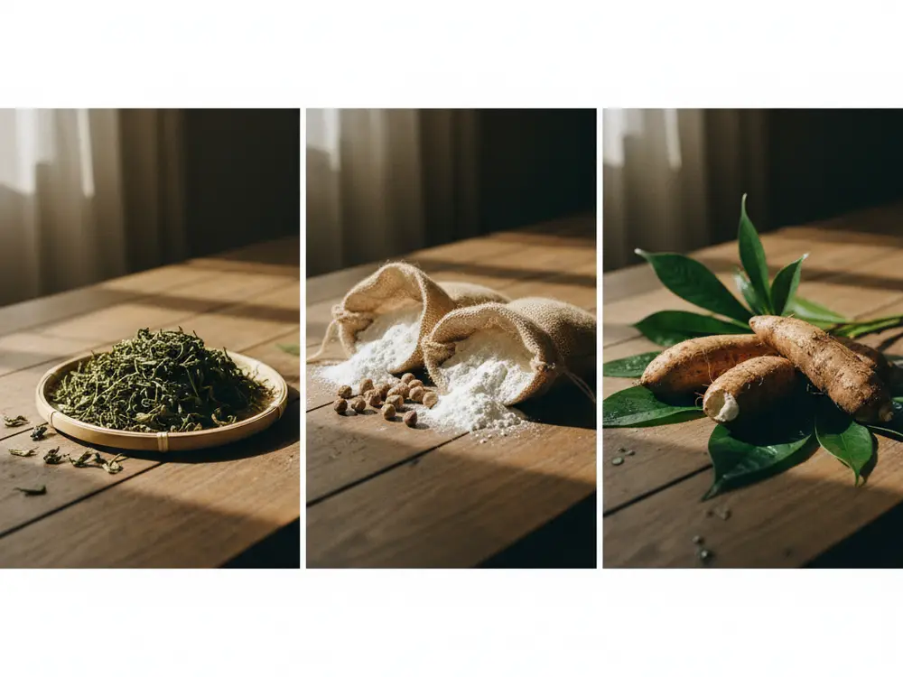
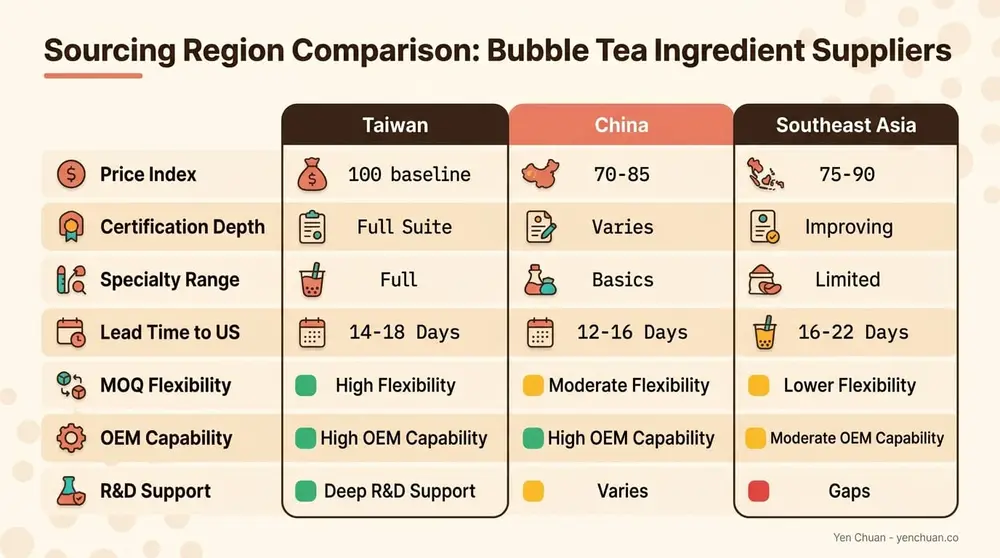
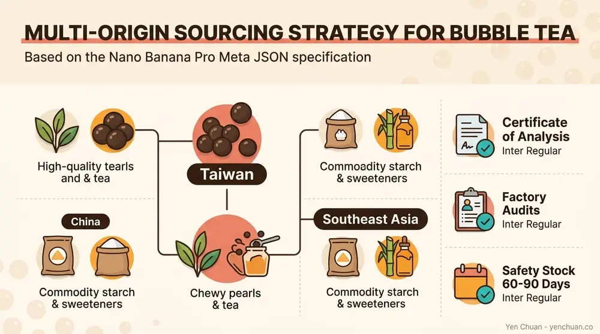

Articles / Business & sourcing
Bubble Tea Supply: Taiwan vs China vs Southeast Asia
2026-03-31 · Sourcing, Industry Trends

Original public content from Yen Chuan. Product claims and specifications remain subject to confirmation by the company.
Bubble Tea Supply: Taiwan vs China vs Southeast Asia Sourcing Compared
If you run a boba shop — or plan to open one — your ingredient sourcing decision will shape everything from drink quality to profit margins. Taiwan, China, and Southeast Asia each offer distinct advantages as bubble tea supply origins, and the right choice depends on your volume, quality threshold, and logistics reality. Here's a side-by-side look at what each region actually delivers, based on current pricing, certifications, and supply chain performance.
Why Taiwan Still Dominates Bubble Tea Sourcing
Taiwan invented bubble tea in the 1980s, and four decades later, Taiwanese manufacturers still set the global standard for ingredient quality. That's not just brand heritage — it's infrastructure. The island houses over 200 specialized bubble tea ingredient factories, most clustered in Taichung and Tainan, with vertically integrated operations that control everything from raw material intake to export-ready packaging.
Taiwanese suppliers routinely hold HACCP, ISO 22000, HALAL, and SGS certifications. A 2023 Euromonitor report found that businesses sourcing from Taiwanese bubble tea suppliers experienced 20% fewer product recalls compared to other sourcing origins. That recall gap translates directly into lower liability costs and more consistent customer experience.
Taiwan's export logistics are mature. Kaohsiung and Keelung ports handle large-volume container shipments efficiently, and Taiwan's free trade agreements with several ASEAN nations reduce tariff friction for buyers in the region. For shops that need reliable, certified ingredients with traceable supply chains, Taiwan remains the benchmark.

China's Cost Advantage — and Its Trade-Offs
China is the world's largest producer of tapioca starch and tea leaves by volume, and its bubble tea ingredient factories have scaled rapidly since 2018. Cities like Guangzhou, Kunming, and Chengdu host major production clusters, and Chinese manufacturers can undercut Taiwanese prices by 15–30% on items like powders, syrups, and basic tapioca pearls.
The cost savings come with caveats. Certification coverage is inconsistent — while top-tier Chinese factories hold ISO and HACCP, many mid-tier operations do not, and audit transparency varies. According to Made-in-China Insights, China's bubble tea supply chain has grown into a $3 billion domestic ecosystem, but export-facing quality control still lags behind Taiwan's for specialty items like flavored pearls and custom powder blends.
For buyers targeting price-sensitive markets or sourcing commodity-grade ingredients in bulk, China offers legitimate scale. But if your product line depends on nuanced flavor profiles or you serve markets with strict import regulations (the US, EU, Japan), you'll spend more on QC audits and compliance verification to de-risk Chinese sourcing.
Southeast Asia: The Emerging Middle Ground
Thailand, Vietnam, and Indonesia have emerged as credible sourcing alternatives, particularly for tapioca starch and basic toppings. Vietnam is now the world's second-largest cassava producer, and Thai factories have invested heavily in food-grade processing lines that meet export standards.
| Factor | Taiwan | China | Southeast Asia |
|---|---|---|---|
| Price (indexed) | 100 (baseline) | 70–85 | 75–90 |
| Certification depth | HACCP, ISO 22000, HALAL, SGS | Varies widely | Improving (HACCP common in Thailand) |
| Specialty ingredients | Full range (pearls, powders, syrups, tea, toppings) | Strong in basics, growing in specialty | Limited to starch, basic toppings |
| Lead time to US West Coast | 14–18 days | 12–16 days | 16–22 days |
| MOQ flexibility | Moderate (500–1,000 kg typical) | Low (some accept 200 kg) | Moderate to high |
| OEM/private label | Mature, widely available | Available but variable quality | Limited |
| R&D / custom formulation | Strong (many suppliers have in-house labs) | Growing | Minimal |
Southeast Asian suppliers work best as secondary sources — for tapioca starch feedstock or basic toppings where Taiwan-grade certification isn't required. Few SE Asian factories offer the full-range OEM capability or custom formulation services that Taiwanese manufacturers provide.
Tariffs, Trade Policy, and the 2026 Landscape
US tariffs on Chinese goods have added 7.5–25% duties on many food ingredients since 2019, and the tariff environment remains unpredictable heading into 2026. Taiwanese imports face lower or zero tariffs under most-favored-nation treatment for many bubble tea ingredient categories. Southeast Asian imports benefit from ASEAN trade frameworks but face variable phytosanitary requirements depending on the destination country.
According to Fortune Business Insights, the global bubble tea market is projected to reach $5.8 billion by 2030, with supply chain resilience becoming a key competitive differentiator. Brands that locked in multi-origin sourcing strategies — Taiwan as the primary quality anchor, with China or SE Asia for volume commodities — reported fewer disruptions during the 2024 shipping bottlenecks.

How to Build a Multi-Origin Sourcing Strategy
The most resilient boba businesses don't rely on a single country. A practical approach:
Anchor your signature ingredients — tapioca pearls, premium tea leaves, custom powder blends — with a Taiwanese supplier that offers R&D support and consistent certification. Use China or Southeast Asia for commodity inputs like basic tapioca starch or standard sweeteners where the quality threshold is lower and price sensitivity is higher.
Request Certificates of Analysis (COA) for every shipment regardless of origin. Conduct annual factory audits — or hire a third-party inspection service — for any supplier outside Taiwan, where the audit infrastructure is already built into most export relationships. Build a 60–90 day safety stock for your highest-volume ingredients to buffer against port delays or seasonal supply fluctuations.
Authority Sources
- Euromonitor International — Bubble Tea Market Analysis
- Fortune Business Insights — Global Bubble Tea Market Report
- FDA — HACCP Principles & Application Guidelines
- Future Market Insights — Bubble Tea Market Trends 2025-2035
About Yen Chuan
Yen Chuan has been at the heart of Taiwan's bubble tea industry for over 20 years, supplying premium powders, syrups, tapioca pearls, and tea leaves to thousands of boba shops worldwide. With an in-house R&D lab and a commitment to quality ingredients, Yen Chuan is more than a supplier — we're your partner in the boba business.
As a company that ships to over 40 countries, we've watched sourcing strategies evolve firsthand. The clients who build the strongest businesses are the ones who treat ingredient sourcing as a strategic decision, not just a cost exercise.
Looking for a reliable Taiwan-based bubble tea ingredient partner? Browse our full product catalog or get in touch with our team — we ship worldwide and offer OEM custom formulation for brands that want something uniquely theirs.
Frequently Asked Questions
Q: Is Taiwan or China cheaper for bubble tea ingredients?
A: China is typically 15–30% cheaper on commodity items like basic tapioca starch and standard syrups. Taiwan commands a premium for specialty ingredients — flavored pearls, custom powder blends, premium tea — where the quality gap justifies the price difference. Total cost of ownership often narrows when you factor in QC audits and recall risk.
Q: What certifications should a bubble tea supplier have?
A: At minimum, look for HACCP and ISO 22000 certification, which cover food safety management systems. For markets serving Muslim consumers, HALAL certification is essential. SGS testing reports verify specific claims about ingredients. Taiwanese suppliers typically hold all four; coverage varies elsewhere.
Q: How long does shipping take from Taiwan to the US?
A: Ocean freight from Taiwan to US West Coast ports (LA, Long Beach) takes 14–18 days. East Coast delivery adds 5–7 days via Panama Canal routing. Air freight cuts transit to 3–5 days but costs roughly 5–8x more per kilogram — practical only for urgent small shipments or samples.
Q: Can I source from multiple countries at once?
A: Yes, and most established boba businesses do exactly that. A common strategy is anchoring premium ingredients (pearls, teas, custom blends) with a Taiwanese supplier while sourcing commodity inputs (basic starch, standard sweeteners) from China or Southeast Asia for cost efficiency.
Q: What is the typical MOQ for bubble tea ingredients from Taiwan?
A: Most Taiwanese manufacturers set minimum order quantities between 500 kg and 1,000 kg per SKU for standard products. Custom formulations or private-label orders may require higher minimums (1,000–2,000 kg). Some suppliers offer lower MOQs for first-time buyers or sample orders to help new businesses get started.